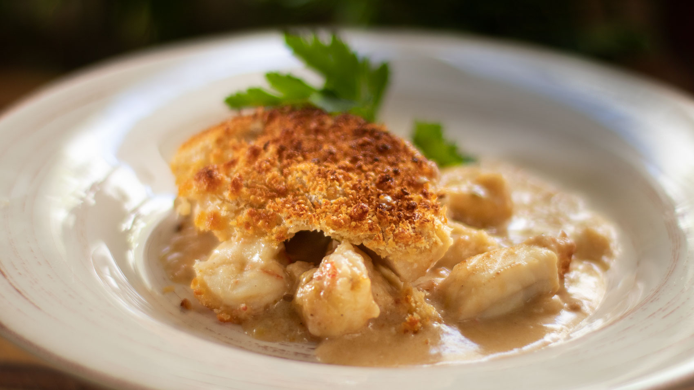

Fish With Gratins

These individual portions of fish in tomato sauce, topped with herby breadcrumbs, freeze beautifully - perfect for no-fuss entertaining
Ingredients
- 3 tbsp olive oil
- 1 large onion, thinly sliced
- 1 fennel bulb (about 250g/9oz), trimmed and thinly sliced
- 3 large garlic cloves, finely sliced
- 1 heaped tsp coriander seeds, lightly crushed
- 150ml white wine
- 2 x 400g cans chopped tomatoes with herbs
- 2 tbsp tomato purée
- good pinch of saffron
- 1 bay leaf
- 1 tbsp fresh lemon juice
- 1 small bunch flat-leaf parsley, leaves roughly chopped
- 900g mixed skinless fish fillets, (anything you like) cut into chunks
- 350g raw peeled king prawn
- 75g finely grated parmesan
- 50g panko or coarse dried breadcrumbs
- green salad, to serve (optional)
Recipe
-
STEP 1
Heat the oil in a large, wide non-stick saucepan or sauté pan and gently fry the onion, fennel, garlic and coriander seeds for 15 mins, stirring regularly until the vegetables are softened and lightly coloured. Pour the wine into the pan and add the tomatoes, tomato purée, saffron and bay leaf. Season and bring to a gentle simmer. Cook for about 15 mins, stirring occasionally, until thick.
STEP 2
Heat oven to 220C/200C fan/gas 7. Stir the lemon juice and most of the parsley into the tomato mixture, pop the raw fish pieces and prawns on top and stir well. Cover tightly with a lid and simmer gently over a medium heat for 4-5 mins or until the fish is almost cooked. Stir a couple of times as the fish cooks, taking care not to let it break up.
STEP 3
Ladle the hot tomato and fish mixture into 6 individual pie dishes – they will each need to hold around 350ml. Mix the cheese, breadcrumbs, remaining parsley and a little ground black pepper together and sprinkle over the top. Bake on a baking tray for 20 mins or until the pies are golden brown and bubbling. Serve with green salad, if you like.
Click here to go back to previous page